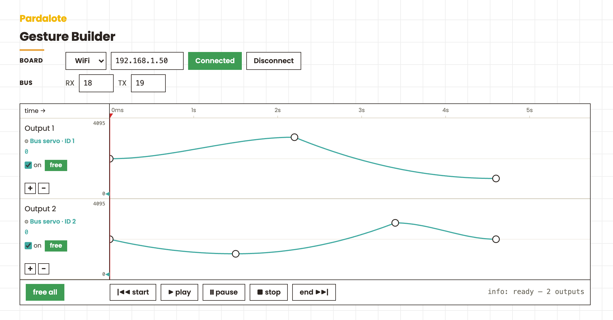

Author expressive motion on a timeline — draw keyframes for any mix of servos, bus servos, and steppers, play it back phase-locked, and copy out the JavaScript or Arduino code.

Author expressive motion on a timeline, then play it back through Pardalote's
gesture() — an on-board segment schedule each output runs on its own clock.
One web page, one Arduino, any mix of outputs.
Each row is one output (labelled Output N, editable). Click its gutter
summary to open a settings dialog — choose Bus servo, PWM servo, or
Stepper and set its connection pins there; the value axis and units follow the
type (counts / degrees / steps). Each keyframe is a time × a value; the line
between two keyframes is a segment you can shape with an easing curve. Play sends every row as one lane of a single arduino.gesture({…})
so they all start together and arrive together — starting from the playhead you
position on the ruler. Pause freezes the playhead and lets you scrub the
outputs through the sequence by hand.
-1 for none). Only bus servos report position, so pose (hand-authoring) and
free are bus-servo features; PWM servos always hold, and steppers free only with
an EN pin.Wiring for bus servos is exactly the Bus servos example.
Upload a Pardalote sketch that registers the outputs you'll use — bus servos, PWM
servos, and/or steppers — and note the IP it reports. (The
Coordinated motion example is a ready-made mixed rig — its
sketch already includes the PardaloteServo / PardaloteBusServo / PardaloteStepper
headers, so you can attach whatever mix of outputs you need.) Nothing tool-specific
lives on the board: the timeline is all in the
browser and the board just plays the gestures it's sent, on whatever outputs it has.
This is a tool — no code editing. Open index.html and:
| Action | What it does |
|---|---|
| click a row's gutter summary | open the settings dialog — output type + connection pins (draggable; OK keeps, cancel/Esc revert) |
| double-click a lane | add a keyframe at that time and value |
| drag a keyframe | set its value (up/down) and time (left/right) |
| right-click a keyframe | delete it, or pose servo (bus servos only) — free the servo, hand-move it, click to commit (Esc cancels) |
| right-click a segment | set its shape (easing) — linear / easeIn / easeOut / easeInOut / back |
| drag the last keyframe past the right edge | extend the timeline |
| drag a max / min value (gutter) | set that output's soft limit (the value axis spans min–max, in the type's unit) |
| right-click a max / min value | reset to the type's default range — or (bus servos only) pose limits by sweeping the range by hand |
| drag the playhead (ruler) | set where play starts; while paused, scrub it to drive the outputs through the sequence |
| ▶ play | play from the playhead (one batched arduino.gesture({…})) |
| ❙❙ pause | freeze the playhead; scrub to move the outputs (a held group.write()) |
| ■ stop | cancel the gesture, hold, return the playhead to the start |
| free / free all | release an output's torque to hand-pose it — bus servos and steppers-with-EN only (greyed otherwise) |
The teal marker in each row's gutter is that output's live position (sensed for bus servos; last-commanded for PWM servos and steppers). Everything (rows, keyframes, shapes, connection) is remembered per browser.
Two code panels below the timeline show the built gesture as runnable code, updating
live as you edit. In both, the movement is wrapped in a playGesture() function
you call from whatever triggers it — a sensor, a button, an LLM, any command:
on('ready'); the movement is
the batched arduino.gesture({…}) (or a single output.gesture([…]) for one output).static const PardaloteSeg
schedules in flash, attached in setup() and played with Pardalote.gesture().add(…).play()
(or Pardalote<Type>.gesture(id, segs, count) for one output). No browser needed.Each on('ready') / setup() calls playGesture() once as a demo. Copy whichever
you need. Switched-off rows are omitted, matching what play sends.
Each row becomes a gesture(). A row's keyframes are turned into an absolute
segment schedule — a lead-in from the servo's live position to the first keyframe,
then one segment per gap. Each segment carries the left keyframe's easing curve:
// row points [{t, v, curve}, …] → gesture segments (values in servo counts)
const segs = [{ to: pts[0].v, dur: pts[0].t, curve: 'linear' }];
for (let i = 1; i < pts.length; i++)
segs.push({ to: pts[i].v, dur: pts[i].t - pts[i-1].t, curve: pts[i-1].curve });
servo.gesture(segs, { absolute: true });
All rows play together. Instead of firing each gesture() separately, the
rows are sent as one multi-channel arduino.gesture({…}) — a single batched
message where every channel starts together, and shorter lanes are padded with a
trailing hold so every servo arrives together:
arduino.gesture({ seq0: segsA, seq1: segsB }, { absolute: true });
(The keys are the actuator names you passed to arduino.add(name, …). Under the
hood this runs through a transient group; when you're
already holding a named group for live control, group.gesture() does the same.)
The preview uses the same easing math as the board (curveShape()), so the
shape you draw on screen is the shape the schedule encodes.
Servo,
whose controller takes a raw angle — Pardalote renders the easing with a
board-side streaming interpolator: it samples the curve on a fixed clock and
streams look-ahead setpoints (batched across a group into one phase-locked
write). The shape you draw, overshoot included, is the shape the servo runs — no
need to hand-decompose a move into extra keyframes to fake it.